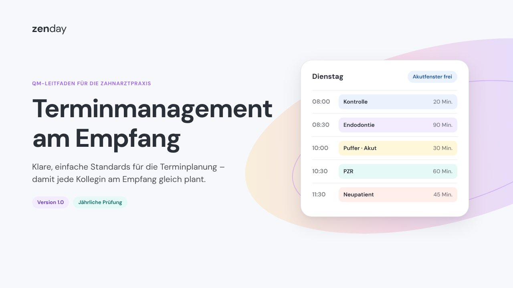
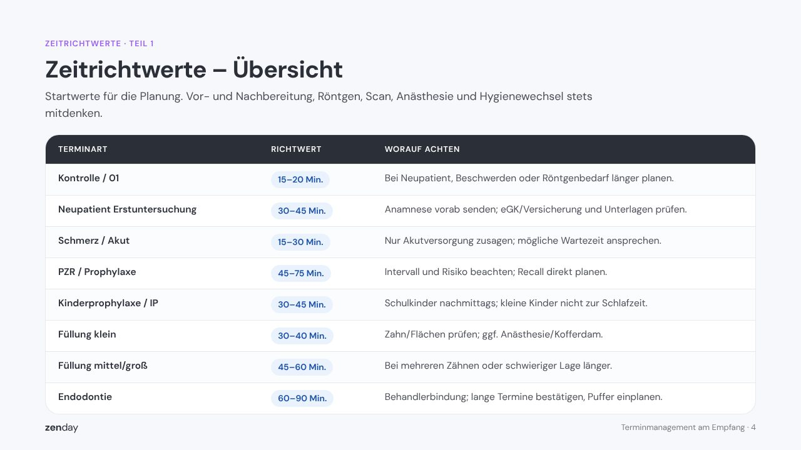
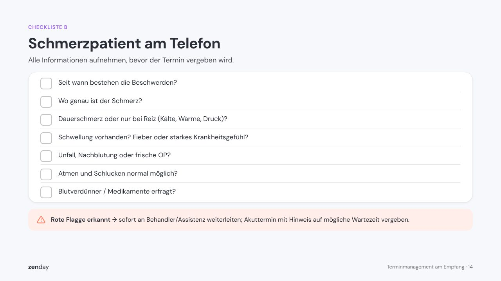

Jede plant Termine anders? Ein Standard für Ihren Empfang
Zeitrichtwerte für 16 Terminarten, Akut-Abfrage mit roten Flaggen und 2 Checklisten. Kostenlos und sofort einsetzbar, auch für neue Kolleg:innen.

Leitfaden kostenlos erhalten
Sie erhalten den Download direkt auf der nächsten Seite.
Kommt Ihnen das bekannt vor?
Eine Füllung ist mit 20 Minuten geplant – und der ganze Nachmittag verschiebt sich.
Eine Schmerzpatientin ruft an – und jede Kollegin fragt etwas anderes ab.
Eine neue Kraft am Empfang muss bei jedem Termin nachfragen.
Das liegt selten am Team. Es fehlt ein gemeinsamer Standard – und jemand, der ihn nachhält.
Vom Bauchgefühl zum Standard am Empfang
Was sich mit dem Leitfaden am Empfang ändert:
Plus Zuschläge für Angstpatienten, Kinder, ältere Patienten und Sprachbarrieren.
Der Empfang erkennt Warnzeichen und leitet sofort weiter – ohne Diagnose.
Fest, bevorzugt, frei oder erst nach Rücksprache – für jede Leistung klar.
Freie Termine fair nachbesetzen, mit Hinweis zum Datenschutz auf Mailbox und SMS.
Recall-Tabelle, tägliches Briefing und monatliche Kurzanalyse.
Plus eine Seite „Praxis-Festlegungen“, die Sie einmal im Team ausfüllen.


Was kostet Sie ein Kalender, der jeden Tag kippt?
[Minuten Verzug pro Tag] × [Behandlungstage im Jahr] = Stunden, in denen Ihr Team gegen den Kalender arbeitet.
Dazu kommen Rückfragen am Empfang, Wartezeiten im Wartezimmer und freie Termine, die niemand nachbesetzt. Besonders spürbar wird das, wenn sich Teilzeitkräfte abwechseln oder neue Kolleg:innen am Empfang starten.
Ein Leitfaden hilft nur, wenn er gelebt wird
In zenday wird der Leitfaden Teil Ihres QM. Das tägliche Briefing, die monatliche Kurzanalyse und die jährliche Prüfung werden zu Aufgaben mit Verantwortlichen. Offene und überfällige Aufgaben werden sichtbar, erinnert und eskaliert.
So weiß auch eine neue Kollegin am Empfang, was wann zu tun ist – ohne dass Sie hinterherlaufen.
Tilmann Förster, Gründer von zenday
zenday ist speziell für Zahnarztpraxen entwickelt. Wir sehen in Praxen immer wieder dasselbe: Gute Regeln gibt es – aber jede kennt eine andere Version. Dieser Leitfaden bringt die Terminplanung am Empfang auf einen gemeinsamen Stand.
Kurz beantwortet
Was kostet der Leitfaden?
Nichts. Sie erhalten das PDF direkt nach dem Absenden des Formulars zum Download.
Passt das zu unserer Praxis?
Die Zeitrichtwerte sind Startwerte. Mit der Seite „Praxis-Festlegungen“ passen Sie Akutfenster, Pufferregel und Freigaben an Ihre Praxis an – und geben sie im Team frei.
Ersetzt das die Rücksprache mit dem Behandler?
Nein. Der Empfang stellt keine Diagnose. Der Leitfaden zeigt, welche Informationen aufzunehmen sind und wann sofort weitergeleitet wird.
Was passiert mit meinen Daten?
Wir nutzen Ihre Angaben, um Ihnen den Leitfaden bereitzustellen und uns telefonisch bei Ihnen zu melden. Praxis-Tipps per E-Mail erhalten Sie nur mit Ihrer Einwilligung. Details in der Datenschutzerklärung.
Ein Standard für Ihren Empfang – heute noch im Team besprechen
16 Seiten, 2 Checklisten, sofort einsetzbar.